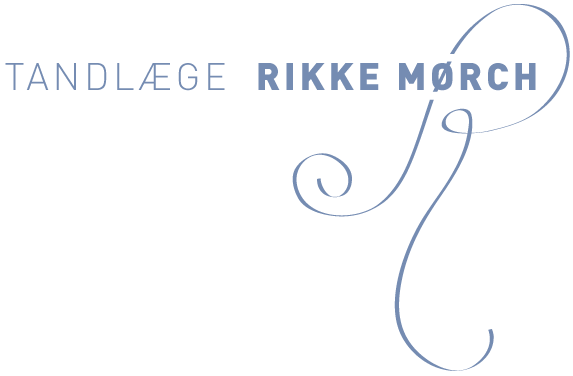

Om klinikken
Der har eksisteret tandlægeklinik på Tuborgvej 238, siden ejendommen blev opført i 1953.
Klinikken blev i 2008 overtaget af tandlæge Rikke Mørch, der er den fjerde tandlæge på adressen.
Klinikken er siden overtagelsen blevet moderniseret, og dette fortsætter løbende.
Du vil derfor blive behandlet med det nyeste udstyr og behandlingsmetoder.
Hvis du arbejder eller bor i Brønshøj, Bispebjerg, Emdrup, Nørrebro, NV, Gentofte, Hellerup,
Østerbro, Dyssegaard eller Frederiksberg, har du ikke langt til klinikken.
Vores værdier
Menneskelig kontakt, høj faglig standard og moderne behandlinger kombineret med tryg vejledning gennem hele forløbet.
